9M6JU 2001
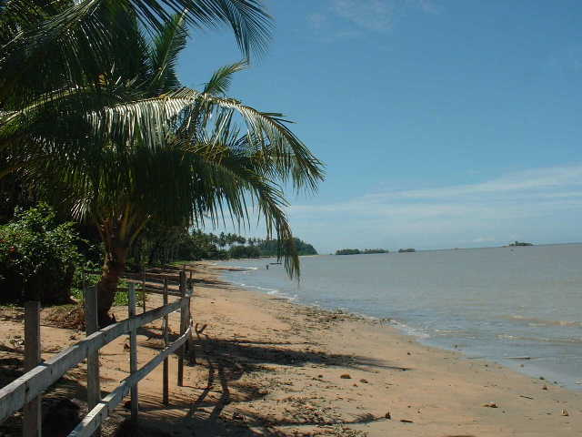
Kota kinabalu Malaysia
08.Nov-15.Nov.2001
|
◎ 9M6TDC & 9M6LSC
2001年11月8日から15日の8日間、東マレーシアのコタ・キナバル(Kota kinabalu)から約1年3ヶ月ぶりに9M6JUを運用しました。 |
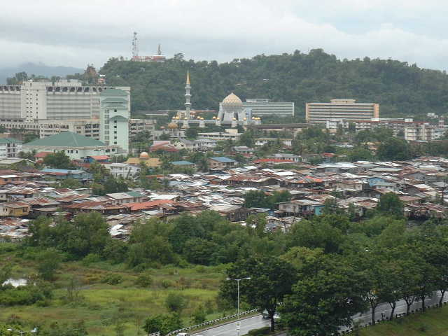
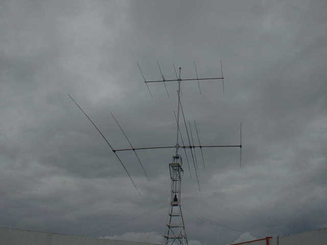
Tang Dynasty Hotelの屋上から見たKota kinabaluの市街地/アンテナ
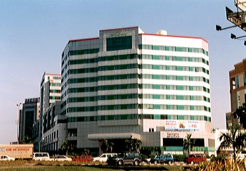
Tang Dynasty Hotelの最上階(11階)にシャックがある
|
◎ Tang Dynasty Hotelでの運用
Tang Dynasty HotelにはFT-920とFT-100が設置されていました。 2ヶ所あるコタ・キナバルのレンタルシャックは、用意されている装置(FT-1000MP/MK5、FT-920、FL-7000)が１局分だけなので、 普段はどちらかの一箇所から運用する事になっていて、2ヶ所から同時に運用する事はありませんが、 今回は人数も多かったため、9M6GYが用意してくれたFT-920と予備のFT-100を使い、初めて2ヶ所から同時運用する事になりました。 |
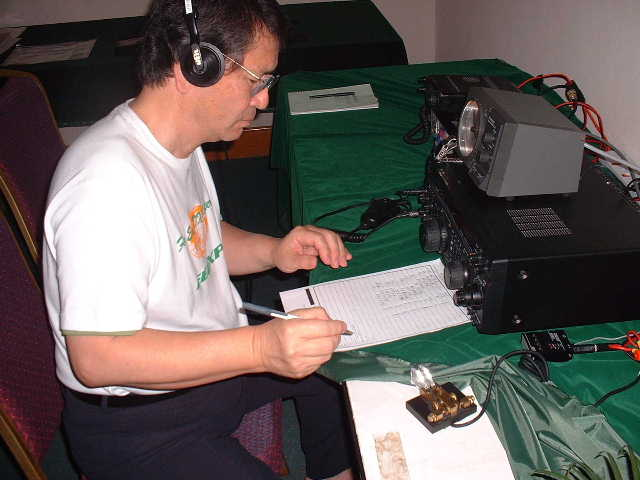
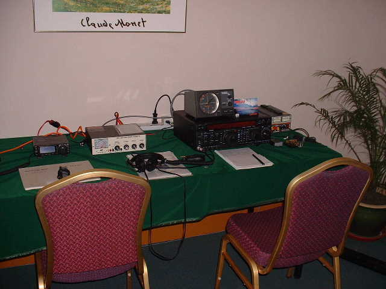
9M6TDCを運用するJA1BRK・米村さん
|
◎ Langkah Syabas Beach Resort Hotelでの運用 SEANET Conventionが終了した11月11日(日)の午後、FEDXPのメンバーが帰国した後に、入れ替わりにTang Dynasty Hotelからこのホテルに移り、 ここから帰国する11/15日まで9M6JUを運用しました。 このホテルは偶然にも、1998年11月に初めて9M6JUを運用した時のリゾートホテル・Seaside Travellers Innの隣で、 今回使用したアンテナタワーが、この時に運用したバンガローからフェンスを隔てて僅か20mと離れていない場所に建設されていたのには驚きました。 |
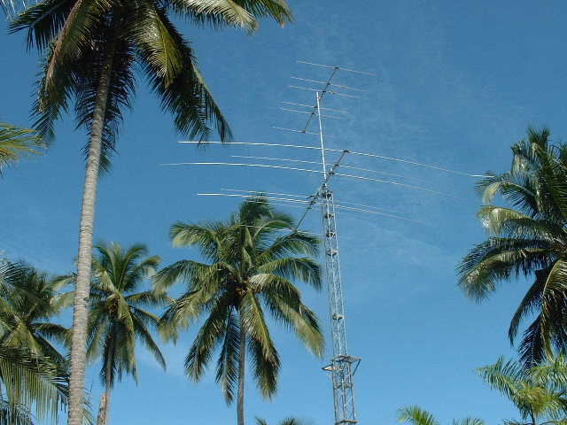
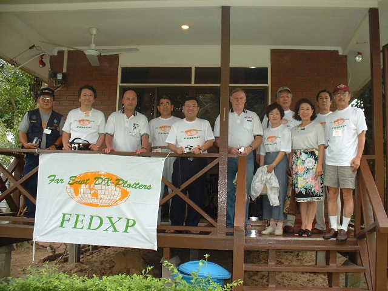
Langkah Syabas Beach Resort Hotelのアンテナ。右はシャレー(Chalet)の前でFEDXPメンバーが記念撮影
左から9M6SU、JA1BRK、???、JA2ADH、JA1HGY、9M6QQ(DF5UG)、JH2ADH(JA2ADH/XYL)
9M6JU(JA1RJU)、JR1FBE(JA1BRK/XYL)、JA8GQZ、JK1OPLの各局
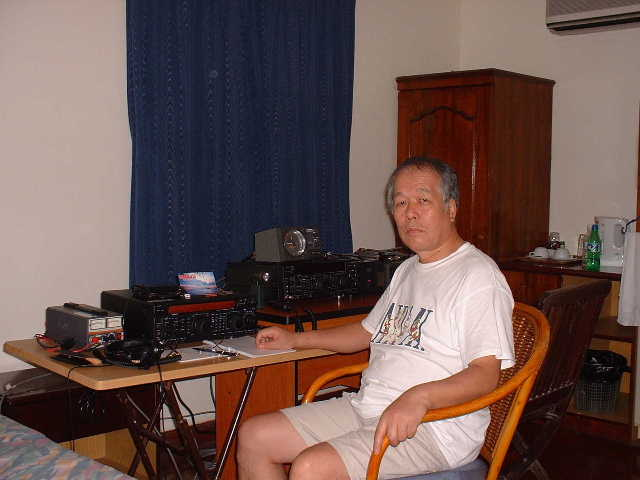
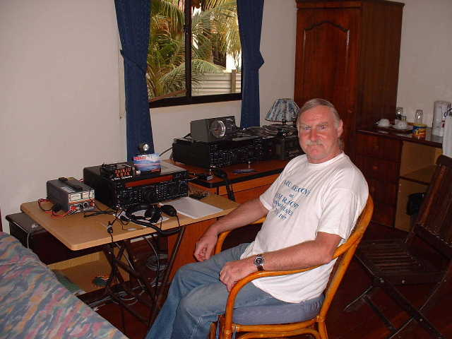
(左)9M6JUを運用するJA1RJUと、ホテルに滞在していた9M6QQ(DF5UG)・Hans
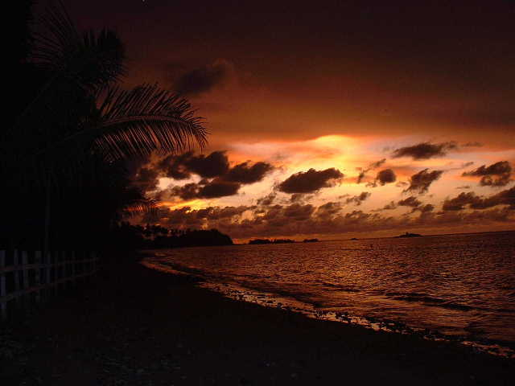
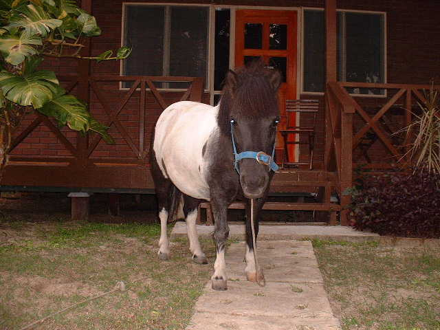
前の海岸から綺麗な夕日が眺められる/庭には草を食む子馬？も
|
◎ 9M6JUの運用
今回は"SEANETがらみ"で6mでも9M6から運用した局(*)が多かったのを理由に、9M6JUは"JA以外"とのQSOに努めることにしました。
HF帯も6mの連絡用に28.885MHzを運用しただけだったため、結果的に総QSO数は331局と少ないものになってしまいました。
◎ 6mのDXCCエンティティー ◎
(*) SEANET前後に6mで9M6から運用した局 |
|
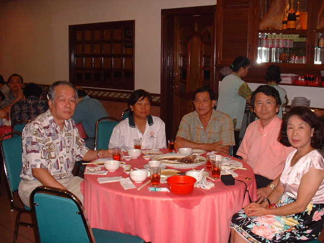 お世話になった9M6GY/9M6JY、JA1BRK/JR1FBEご夫妻。
|
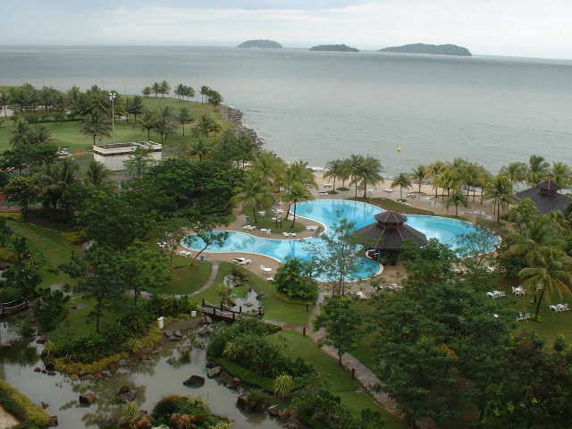 |
SEANET 2001 |